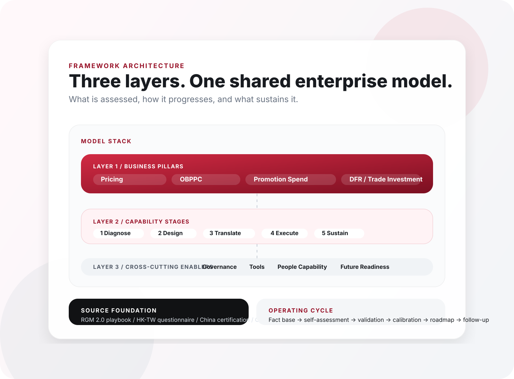

Prepare market evidence before scoring starts.
Framework
One model. Three connected layers.
Use this page to see what is being assessed, how capability flows, and which enablers determine whether progress can hold.
Read this before scoring starts.
It answers what is in scope, how the layers connect, and how the model should be read.
Assessment Architecture
Business levers on top, capability flow in the middle, enabling system underneath.

Layer Detail
Read the model one layer at a time.
Pillar Layer
The commercial levers being assessed.
Stage Layer
How capability progresses from diagnosis to sustainability.
Enabler Layer
The supporting conditions that keep maturity sustainable.
Source Foundation
Four reference models brought into one Swire-specific framework.
RGM 2.0 playbook Core stage flow
Provides the profitable-growth logic and the backbone of the end-to-end stage sequence.
HK / TW questionnaire Lever detail
Adds lever-level detail and the confidence-style structure behind many assessment prompts.
China enterprise certification Validation lens
Shapes the health-check perspective, interview rhythm, and calibration mindset.
CDE E2E playbook Process coherence
Improves coherence through reusable modules, process structure, and maturity progression.
Operating Cycle
The assessment is designed for recurring use, not one-off completion.
Score maturity by pillar with evidence-backed anchors.
Test whether reported maturity matches actual routines.
Moderate scores and align evidence standards.
Translate the results into owners and actions.
Use pulse reviews to track progress between cycles.
Next Step